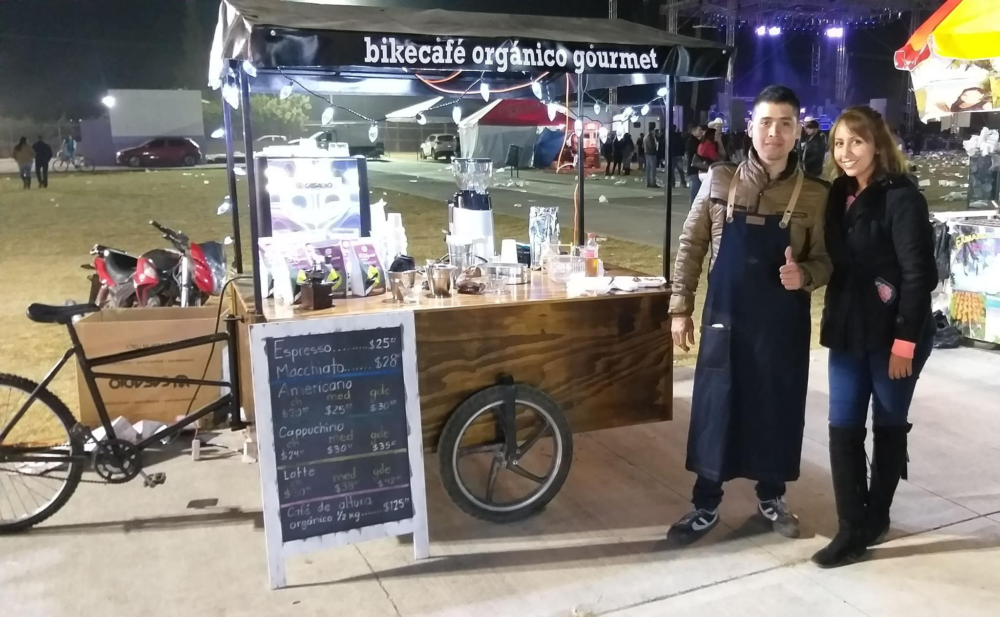

Todo comenzó en las fiestas patronales de La Barca, Jalisco, en diciembre del 2018. José Atilano, un emprendedor apasionado por el café, decidió llevar su amor por esta bebida un paso más allá. Con un carrito móvil de café, José se encontraba entre la multitud, sirviendo sus deliciosas creaciones sin saber que estaba a punto de dar inicio a una aventura empresarial. Lo que comenzó como una simple pasión pronto se convertiría en un éxito.
